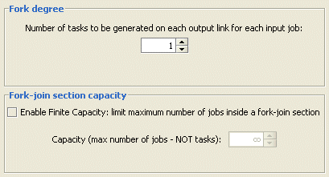
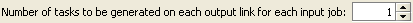
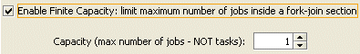

How to define the Forking Behavior
_________________
This section is characteristic onlyof fork stations. It defines the parallelism degree of a job, in terms of the number of tasks it is split into and how many jobs can be serviced simultaneoulsy.
In this section you can define the station forking degree, i.e., the number of tasks created for each job arriving at the fork station, and its capacity, i.e., the maximum number of of jobs that can be in a fork-join section (when a join is present):

Forking degree:it is the number of tasks that are routed on each outgoing link of the fork station. Therefore, each job is split into (forking degree)*(number of outgoing links) tasks. By default the forking degree is 1 and it can be modified using this form:

Capacity: it is the maximum number of jobs that can be served by a fork-jon sectionsimultaneously. It makes sense only if there is a join station matching the fork one. It can be finite, in which case once the limit is reached, jobs wait in the queue of the fork station. A job is removed from the queue and serviced (i.e., split into tasks) when a job is recomposed at the matching join station and leaves it. Capacity is defined using the form below, after checking the "Finite capacity..." box:
